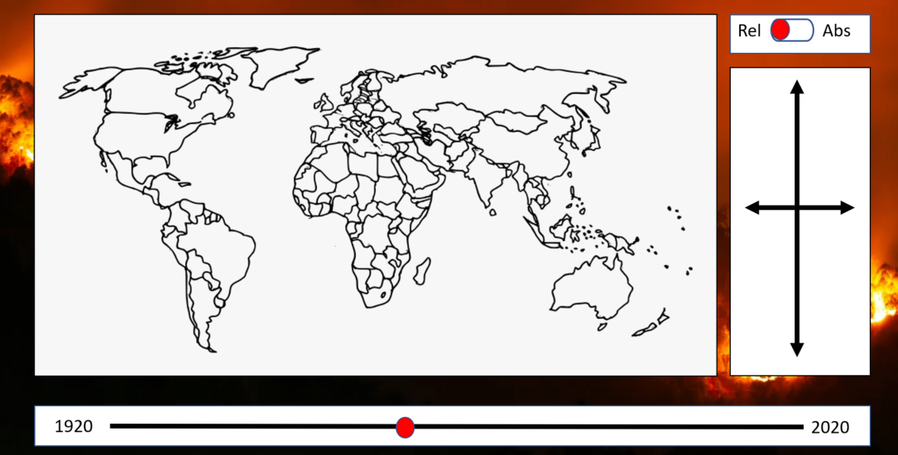

Informationen zum Projekt
Problem
Der Klimawandel ist heutzutage ein allgegenwärtiges Thema. Die Wissenschaft ist sich einig, dass die aktuellen Veränderungen des Klimas weitgehend durch den Menschen verursacht werden. Eine der Hauptursachen des Klimawandels ist der Ausstoß von Treibhausgasen in die Atmosphäre – allen voran Kohlenstoffdioxid (CO2). Bereits im Bericht «Die Grenzen des Wachstums» von 1972 warnten Forscher davor, dass der Ausstoß von Treibhausgasen durch menschliche Aktivitäten wie den Einsatz von fossilen Brennstoffen zu einer Erwärmung der Erde führen könnte. Diese Befürchtungen haben sich leider schon seit Jahrzehnten bestätigt.
Der Klimawandel und die damit verbundene Erderwärmung kann weitere Folgeerscheinungen nach sich ziehen. Dazu zählen die Erhöhung der Durchschnittstemperatur, Änderungen in Niederschlagsmustern, ein Anstieg des Meeresspiegels und eine Zunahme extremer Wetterbedingungen wie Stürmen, Dürren und Hitzewellen. Da es sich beim Klimawandel um ein globales Problem handelt, muss auch länderübergreifend gehandelt werden. Dabei gilt es, die CO2-Emissionen möglichst rasch zu reduzieren, sodass die durchschnittliche Erwärmung auf deutlich unter 2 Grad Celsius begrenzt werden kann. Im Pariser Klimaabkommen wurde ein Zielwert von maximal 1.5 Grad Celsius definiert. Jedoch ist es so, dass nicht alle Länder im gleichen Ausmass CO2 in die Atmosphäre ausstossen und somit einen unterschiedlich grossen Einfluss auf die Zielerreichung haben.
Fragestellung
Grundsätzlich stossen grössere Länder tendenziell mehr CO2 aus als kleine. Doch wie misst man die Grösse eines Landes im Zusammenhang mit dem CO2-Austoss? Mit der Bevölkerungszahl, der Landfläche oder doch eher der Wirtschaftskraft?
Um die Frage zu beantworten, welche Länder welchen Anteil am weltweiten CO2-Ausstoss verursachen, werden wir in diesem Projekt den globalen CO2-Ausstoss von 1970 bis 2020 analysieren. Einerseits zeigen wir, wie viel CO2 die einzelnen Länder jährlich produzieren und setzen dies in Relation zum weltweiten Ausstoss. Da Länder unterschiedlich stark besiedelt sind, ist es ebenfalls interessant zu sehen, wie sich der CO2-Ausstoss pro Landfläche verhält. Umgekehrt möchten wir auch sehen, wie der Ausstoss pro Kopf ist. Da aus unserer Sicht Klimaschutz langfristig nur im Einklang mit einer funktionierenden, ökologischen Wirtschaft gelingen kann, interessiert uns primär, wie sich der CO2-Ausstoss in Relation zur Wirtschaftskraft eines Landes verhält.
Vorgehen zur Beantwortung der Fragestellung
Um die formulierten Fragen zu beantworten, nutzen wir zwei unterschiedliche Datenquellen, deren Daten wir zu einer Datentabelle aggregiert haben. Da der Mensch kaum in der Lage ist, aus tausenden von Datensätzen in tabellarischer Form Informationen zu gewinnen, werden wir die Daten mit der JavaScript Library D3.js visualisieren. Dies wird anhand einer eingefärbten Weltkarte und einem Bubble-Graphen gemacht, wobei das Jahr über einen Slider selektiert werden kann. In einem ersten Sketch skizzierten wir unsere Visualisierung folgendermassen:
Während der Erarbeitung der Visualisierung hat sich gezeigt, dass nebst der Wirtschaftskraft auch noch weitere Dimensionen hilfreich sind, um die Ergebnisse umfassend zu analysieren und Hintergründe zu erkennen. Deshalb haben wir uns dazu entschlossen, den CO2-Ausstoss nicht nur zur wirtschaftlichen Grösse des Brutto-Inland-Produkts (BIP) in Relation zu setzen, sondern wie oben bereits beschrieben auch mit der Landfläche, der Einwohnerzahl und dem weltweiten Gesamtausstoss. Zusätzlich werden auch die absoluten Werte angezeigt. Die entsprechende Färbung der Karte ist über Radio-Buttons wählbar. Um mehrere Dimensionen gleichzeitig zu analysieren, kann der Bubble-Graph genutzt werden. Dieser illustriert die Werte von verschiedenen Ländern, die mittels Klicks in der Karte oder durch vordefinierte Ländergruppen selektiert und im Bubble-Graphen einfach verglichen werden können.
Erkenntnisse
Es hat sich gezeigt, dass die Resultate sehr unterschiedlich ausfallen, je nachdem welche Dimension betrachtet wird.
In wirtschaftlicher Hinsicht ist festzuhalten, dass heutzutage primär westeuropäische wie auch zentralafrikanische Staaten einen nachhaltigen CO2/BIP-Ratio aufweisen. Bei den westeuropäischen Staaten ist dies einerseits auf das hohe BIP, andererseits aber auch auf den strukturellen Wandel hin zu Dienstleistungsgesellschaften und die damit verbundene Auslagerung von CO2-intensiven Produktionsanlagen nach Fernost zurückzuführen. Bei den mittelafrikanischen Staaten hingegen ist die Ursache für den tiefen Ratio darin zu finden, dass pro Kopf einfach sehr wenig CO2 produziert wird, was durch den tiefen Industrialisierungsgrad dieser Länder erklärt werden kann. Sehr hohe und somit schlechte Werte haben Stand 2020 wirtschaftlich schwache Länder wie die Mongolei, Kasachstan oder Südafrika, die aber dennoch einen relativ hohen Pro-Kopf-Verbrauch haben.
Absolut gesehen war lange Zeit die USA das Land mit dem höchsten CO2-Ausstoss. 2006 wurde die USA jedoch von China überholt, welches Stand 2020 über doppelt so viel CO2 produziert wie die USA. Dies spiegelt sich auch in den relativen Zahlen zum globalen Gesamtausstoss wider, wobei China mittlerweile über 30% des CO2 verursacht. Vergleicht man aber die beiden Länder mit dem Ausstoss pro Kopf, produziert ein durchschnittlicher US-Amerikaner mit rund 14 Tonnen jährlich immer noch fast doppelt so viel CO2 wie ein chinesischer Einwohner. Den mit Abstand höchsten Pro-Kopf-Verbrauch haben jedoch Vertreter der sogenannten OPEC-Staaten, wobei Katar mit ca. 87 Tonnen pro Kopf im Jahr 1973 den höchsten CO2-Ausstoss verzeichnete. Auch im Jahr 2020 hat Qatar weiterhin den höchsten Wert, gefolgt von Kuwait und Saudi-Arabien. Offenbar scheint es so zu sein, dass dort, wo fossile Energieträger massenhaft vorhanden sind, auch sehr viel CO2 produziert wird.
Beim CO2-Ausstoss pro Landfläche hingegen sind sehr dicht besiedelte Staaten mit hohem Lebensstandard jene, welche am schlechtesten abschneiden. Nebst den kleinen Golfstaaten Qatar und Kuwait sind dies auch europäische Staaten wie die Niederlande, Luxemburg und Belgien sowie das fernöstliche Japan.
Wie die Analyse schön zeigt, hängt es bei der Beurteilung, wer nun am meisten in der Pflicht ist, seinen CO2-Ausstoss drastisch zu reduzieren, stark vom Blickwinkel ab. Klar ist, dass wir ein globales Problem haben, das unmittelbar angegangen und nur mit vereinten Kräften gelöst werden kann, damit auch für kommende Generationen ein Leben auf dem blauen Planten Erde möglich ist.